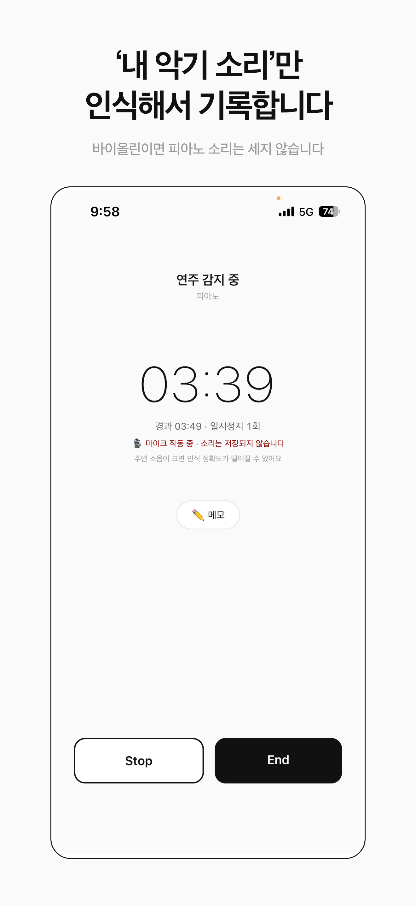
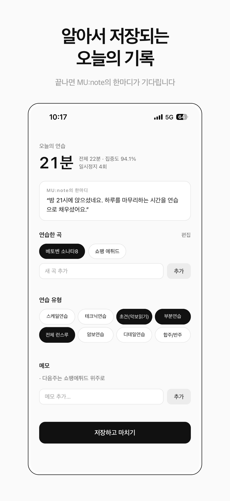
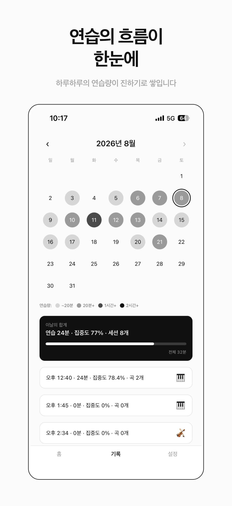
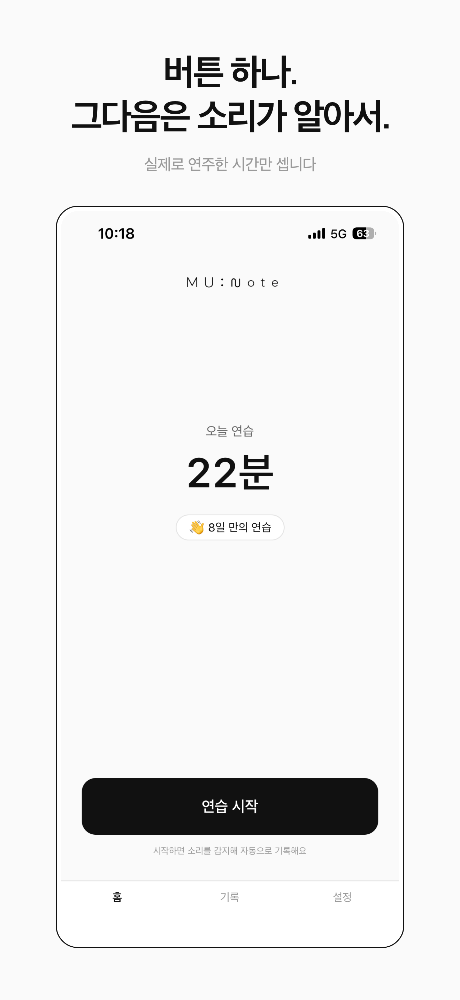
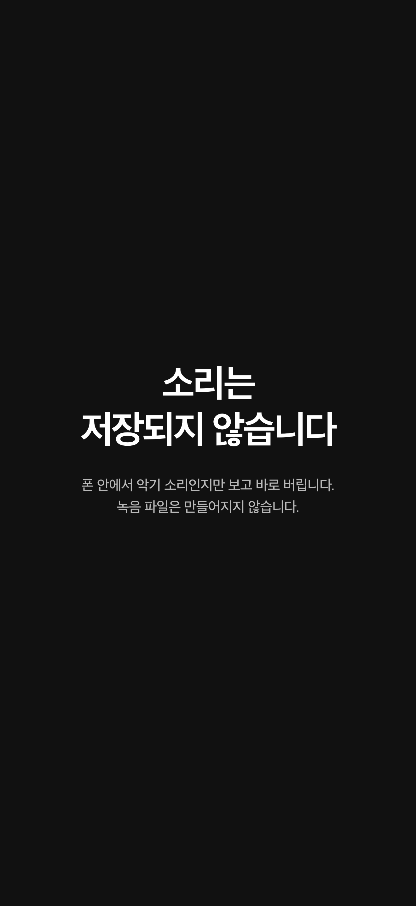

내 악기소리만
자동으로 세는 연습 기록
연습을 시작하면, 실제로 연주한 시간만 알아서 쌓입니다.
iOS 앱 · 가입 없이 시작할 수 있습니다
연습을 시작하면, 실제로 연주한 시간만 알아서 쌓입니다.
iOS 앱 · 가입 없이 시작할 수 있습니다
MU:note는 소리를 듣고 실제로 연주한 시간만 골라 기록합니다.
시작 버튼을 누르고 연습하면, 나머지는 앱이 합니다.
음악을 전공하거나 입시를 준비하며 매일 연습실에 가는 사람을 위해 만들었습니다.
폰을 옆에 두고 연습을 시작하세요. 타이머는 신경 쓰지 않아도 됩니다.
설정한 악기 소리가 들릴 때만 시간이 쌓입니다. 다른 악기 소리나 잡음은 인식하지 않습니다.
실제로 연주한 시간과 집중도가 달력에 쌓입니다. 20분 이상 연습한 날에는 한 문장의 분석이 도착합니다.





옆으로 넘겨보세요
설정한 내 악기 소리만 인식합니다. 악보를 넘기고, 물을 마시고, 잠깐 쉬는 시간은 빼고 셉니다. 15초가 넘는 침묵은 연습 시간에서 제외됩니다. 피아노, 현악기, 관악기, 성악을 지원합니다.
마이크로 들은 소리는 기기 안에서 판단하고 즉시 버립니다. 녹음 파일은 만들어지지 않고, 어디로도 전송되지 않습니다. 무엇을 연주했는지가 아니라, 연주하고 있는지만 봅니다.
연습이 끝나면 곡과 연습 유형을 고르고 짧게 메모할 수 있습니다. 달력에서 지난 연습을 날짜별로 볼 수 있고, 하루 합계와 집중도가 함께 보입니다.
20분 이상 연습한 날에는 지금까지의 기록을 분석한 한 문장을 받습니다. 연습 시간과 집중도 같은 숫자만 사용합니다. 직접 쓰신 메모와 곡 이름은 전송되지 않습니다.
가입하지 않아도 기록과 달력을 모두 쓸 수 있습니다. 로그인하면 기록이 서버에 보관되어, 폰을 바꾸거나 앱을 지웠다 깔아도 돌아옵니다.
연습을 권하는 알림을 원하는 시간에 하루 한 번 받을 수 있습니다. 연습하지 않은 날을 탓하지 않습니다. 기본값은 꺼져 있습니다.
피아노, 현악기, 관악기, 성악을 지원합니다. 악기마다 판단 기준이 달라서, 설정에서 고른 악기에 맞춰 인식합니다.
아니요. 마이크로 들은 소리는 기기 안에서 판단하고 즉시 버립니다. 녹음 파일은 만들어지지 않고, 어디로도 전송되지 않습니다.
아니요. 가입하지 않아도 기록과 달력을 모두 쓸 수 있습니다. 로그인하면 기록이 서버에 보관되어, 폰을 바꾸거나 앱을 지웠다 깔아도 돌아옵니다.
네, 지금은 모두 무료로 사용할 수 있습니다.
아니요. 악보를 넘기고, 물을 마시고, 잠깐 쉬는 시간은 빼고 셉니다. 15초가 넘는 침묵은 연습 시간에서 제외됩니다.
준비 중입니다. 안드로이드는 기기마다 마이크가 달라서, 악기 소리를 가려내는 기준을 다시 맞추고 있습니다. 출시 알림을 신청해 두시면 나오는 날 알려드릴게요.
MU:note가 세는 시간은 앱과 함께한 시간입니다.
앱을 켜지 않고 한 연습도 분명한 연습입니다.
한국어 · English · Español · Deutsch 지원